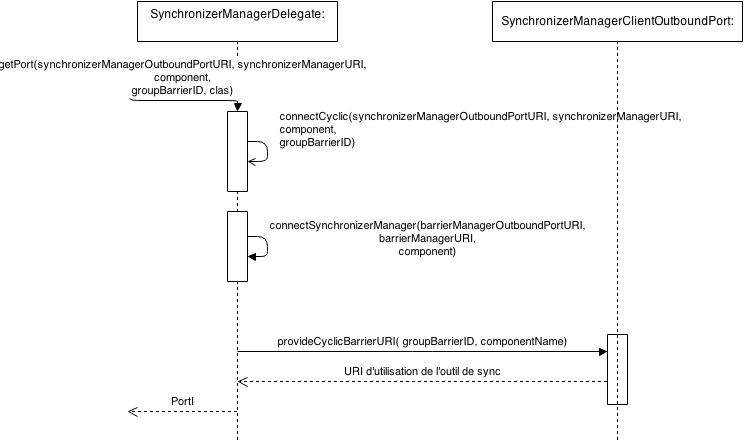

See: Description
| Class | Description |
|---|---|
| SynchronizerManagerDelegate |
Component assemblies for both single computer and distributed deployments.
Le package fr.upmc.components.extensions.synchronizer.delegates va
permettre la connexion d'un client à un outil de synchronisation.
Nous avons utilisé le design pattern Delegate. Nous avons créé une classe statique nommée SynchronizerManagerDelegate. Nous avons désiré qu'elle soit statique pour que le programmeur n’ait pas à se soucier de la référence de notre objet. Cette classe n'offre qu'une seule fonctionnalité qui est getPort. En fournissant à cette méthode l'URI du port outbound du SynchronizerManager, l'URI du SynchronizerManager, le composant qui va utiliser cette méthode (le plus souvent this) et le type d'outil choisi (on utilisera pour cela la réflexivité en Java), elle va nous permettre de récupérer directement un objet de type PortI qui va directement utiliser les services offerts par l'outil de synchronisation.
En interne, la méthode getPort va utiliser d'autres méthodes présentes dans la classe SynchronizerManagerDelegate : une méthode qui va être unique pour chaque outil de synchronisation et une méthode pour la connexion au SynchronizerManager.
Nous allons commencer par récupérer le port du SynchroniserManager puis, grâce au port, appeler la méthode provide[outil]URI qui va nous retourner l'URI du port de connexion de l'outil de synchronisation choisi. Une fois cette URI récupérée, nous allons appeler la méthode getOwnPortURI disponible sur tous nos outils de synchronisation qui va fournir une URI d'utilisation au composant client qui, après cela, pourra se connecter dessus. Ci-dessous un diagramme montrant l'interaction entre les différents composants :
